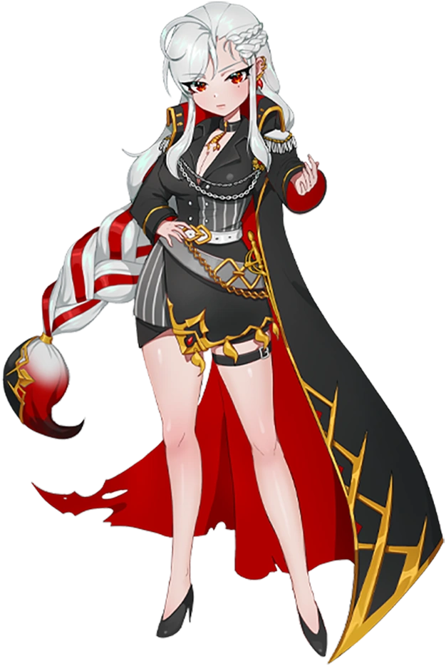

칼파 캐릭터 기획 및 UI 수정 관여
프로젝트 개요
칼파 내의 캐릭터들의 연출을 풍부하게 만들기 위하여 여러 바리에이션의 표정 모델을 추가하기로 결정함.
또한 낡은 비주얼의 캐릭터를 새로 리뉴얼함.

주요 작업
- 캐릭터의 내, 외적 컨셉 기획
- 캐릭터의 감정 표현 기획
- UI 일부 수정
핵심 성과
- 작중 핵심 인물을 매력적으로 등장시켜 스토리적 호평을 이끌어냄.
- 유저들의 스토리적 기대감 향상
칼파 내의 캐릭터들의 연출을 풍부하게 만들기 위하여 여러 바리에이션의 표정 모델을 추가하기로 결정함.
또한 낡은 비주얼의 캐릭터를 새로 리뉴얼함.
